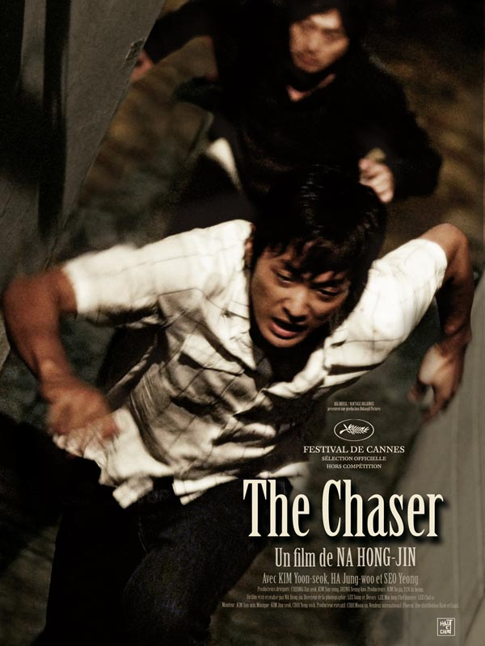

| c1 | c2 |
|---|---|
| The Chaser |  |
| Année | 2008 |
| Acteurs | Jung-woo Ha Kim Yun-seok Yeong-hie Seo |
| Realisateurs | Terence Daw |
| Synopsis | Joong-ho, ancien flic devenu proxénète, reprend du service lorsqu'il se rend compte que ses filles disparaissent les unes après les autres. Très vite, il réalise qu'elles avaient toutes rencontré le même client, identifié par les derniers chiffres de son numéro de portable. Joong-ho se lance alors dans une chasse à l'homme, persuadé qu'il peut encore sauver Mi-jin, la dernière victime du tueur. |